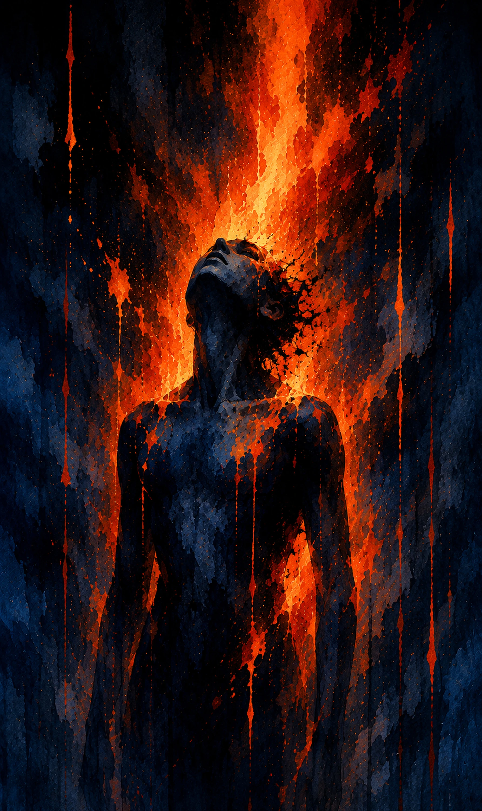
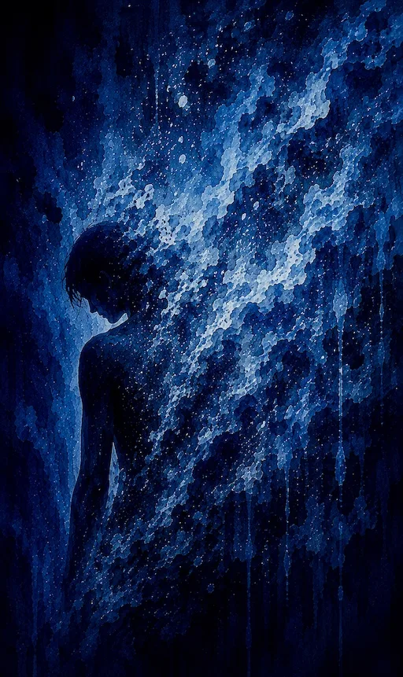
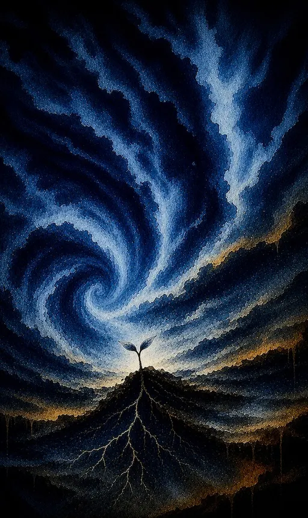

Poetry collection
Liminal Afterhood
Fragments from the Edge of Survival
Liminal Afterhood: Fragments from the Edge of Survival is an experimental poetry collection and trauma-survival archive by Raven Indigo Carrigg. The collection explores suicide survival, trauma memory, queer and trans identity, rupture, nonlinear recovery, and self-reclamation through lyric poetry, free verse, personal archival fragments, field notes, and computationally recombined language.
Rather than presenting survival as a clean timeline or distant retrospective, Liminal Afterhood moves through fragmentation, collision, sensation, contradiction, rupture, repetition, humor, and sudden weather. At its center are the GNOEMs: small poetic organisms distilled from more than a decade of personal archives, recombining language, feeling, image, panic, tenderness, crisis, humor, longing, trauma, and survival pressure into forms that can breathe.
The book grows from Raven’s interest in lived-experience storytelling, creative recovery, nonlinear memory, computational poetics, and the role of voice in meaning-making after crisis.

Inside the collection
Survival as rupture
Liminal Afterhood moves through suicide survival, trauma memory, queer and trans identity, rupture, dissociation, grief, humor, longing, self-reclamation, and the strange unfinished weather of staying alive after crisis.
The collection does not present recovery as a clean arc. It follows survival as something recursive, fragmented, embodied, relational, absurd, tender, contradictory, and still becoming.
The poems hold crisis without polishing it into distance. They let rupture remain jagged, sensory, and alive, while tracing the stubborn movement of a voice that continues through the fire.

Form and voice
Fragments that can breathe
The book combines lyric poems, free verse, personal archival fragments, field notes, and GNOEMs: small poetic organisms shaped from recombined language. Together, these forms create a kind of poetic crosstalk, where different eras of memory interrupt, echo, and answer one another.
Rather than smoothing crisis into a single explanation, Liminal Afterhood lets contradiction remain visible. Its fragments hold panic, tenderness, rage, absurdity, grief, desire, dissociation, and the stubborn pulse of a voice returning to itself.

Afterhood
What begins to grow
The book is not a map out of crisis. It is a record of what kept moving: fragments, instincts, jokes, weather, body memory, old language, new language, grief, attachment, anger, tenderness, and the difficult return of self-trust.
Its afterhood is not a finished place. It is a threshold state, a survival ecology, a strange small growth in the dark where voice, meaning, and agency begin to push upward again.
Liminal Afterhood is a book about staying. It is about what survives distortion, rupture, and erasure; what changes shape; and what keeps speaking from inside the aftermath. A selected excerpt is available above for readers who want to enter the collection before finding the full book in paperback, hardcover, or eBook.
Book details
Title: Liminal Afterhood: Fragments from the Edge of Survival
Author: Raven Indigo Carrigg
Publication date: June 21, 2026
Publisher: Independently published
Formats: paperback, hardcover, eBook
Genre: experimental poetry, trauma-survival writing, queer/trans poetry, computational poetics